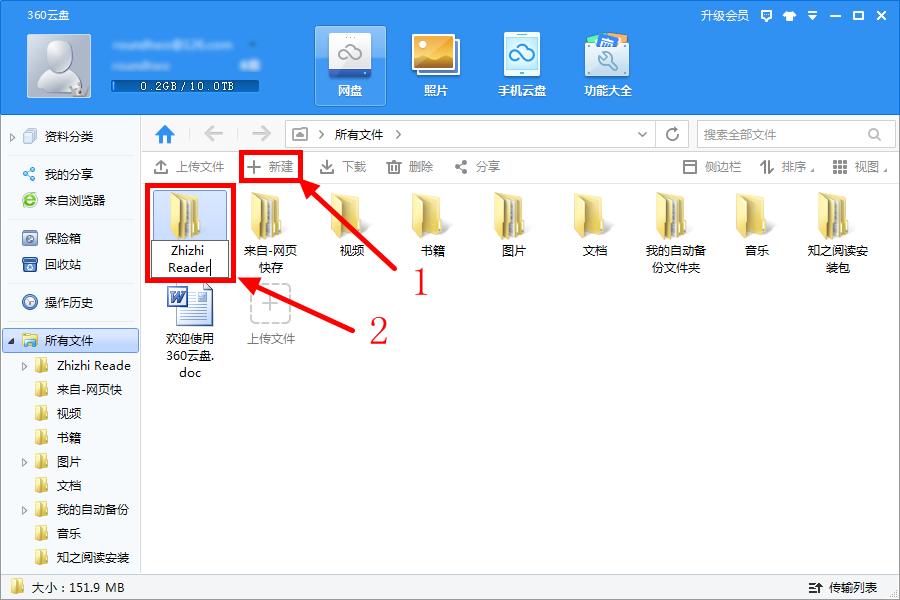
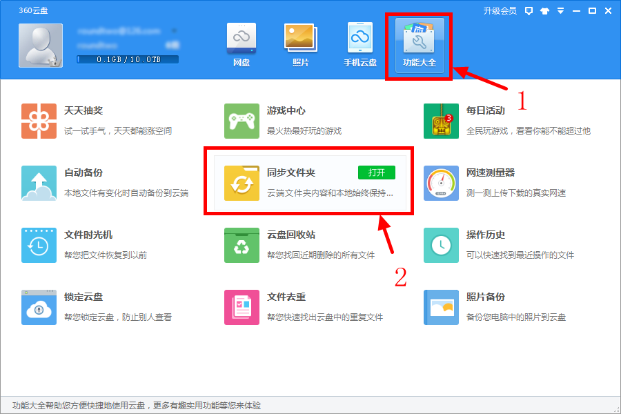
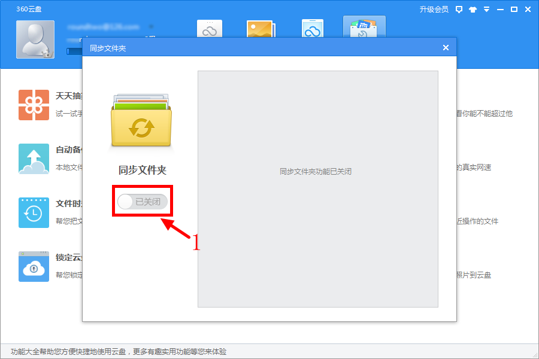
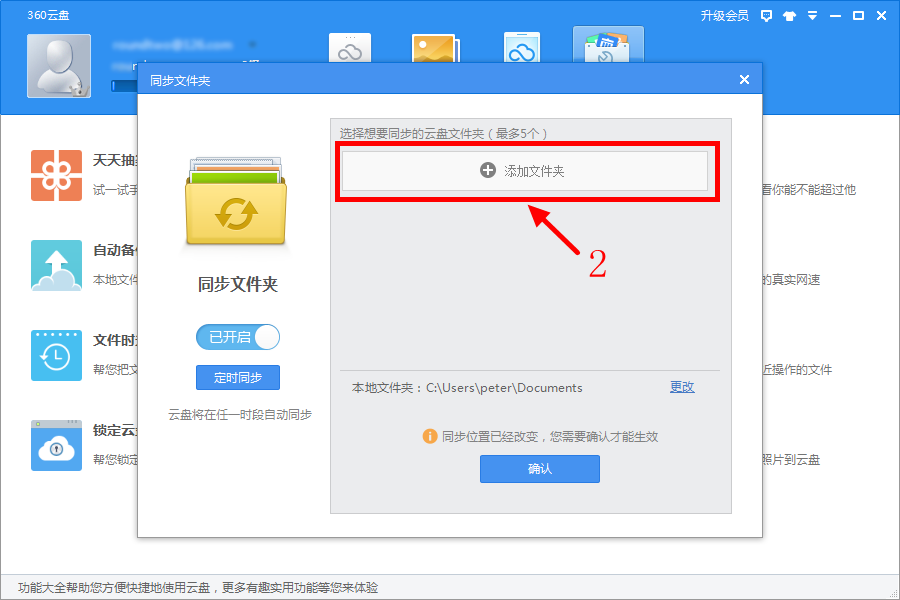
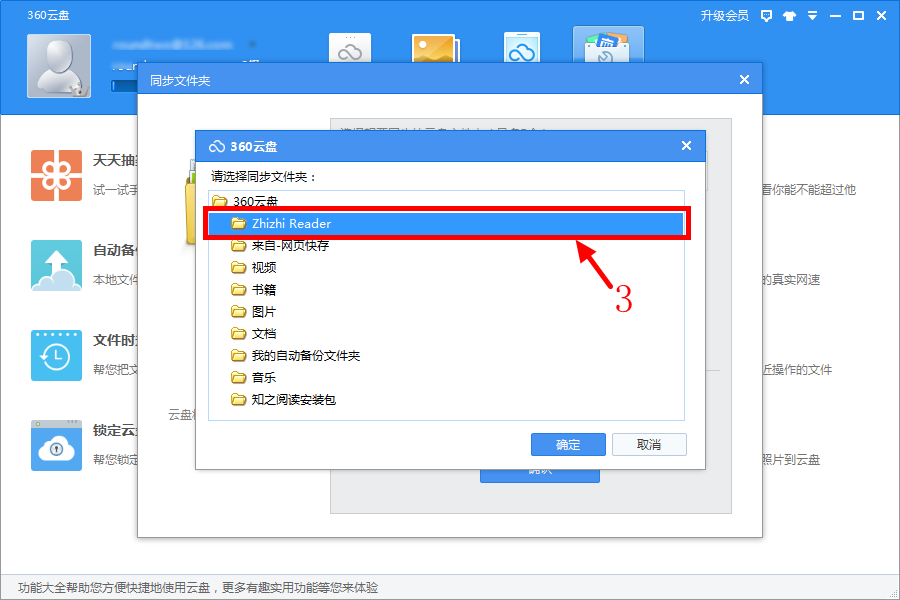
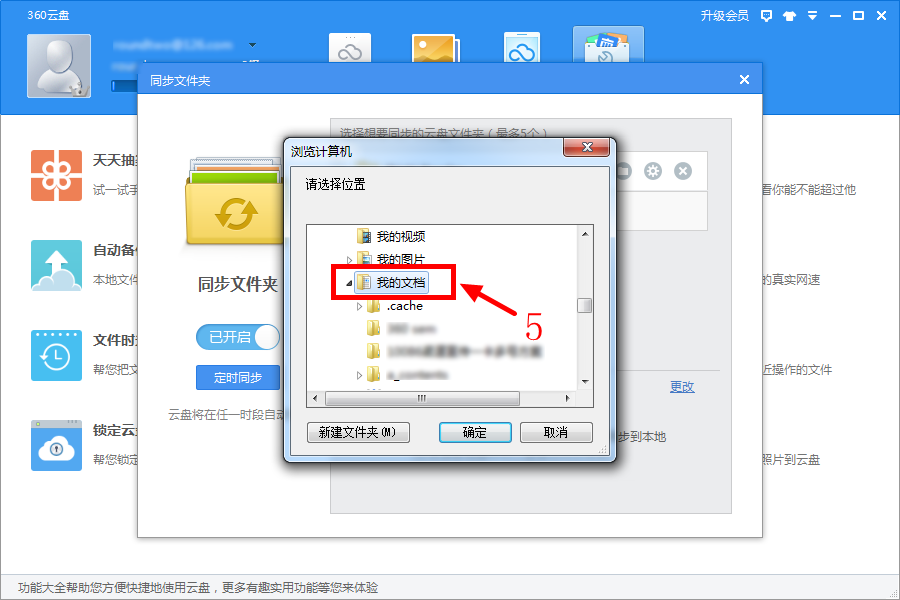
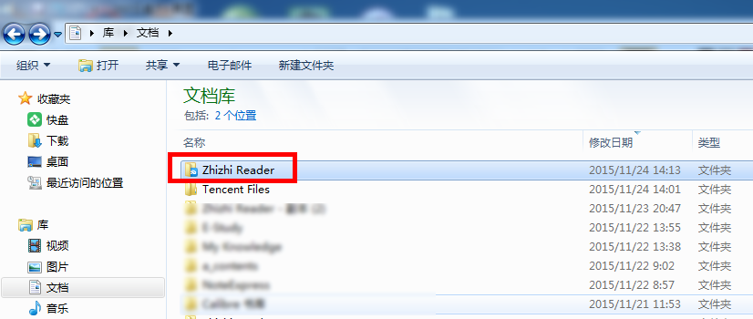

知之阅读 用360云盘同步知之阅读笔记手把手教程
很多朋友要求知之阅读提供云同步功能，能够同步书本、阅读进度和笔记。热心用户 @品味开心茶 提供了一个用360云盘就可以云同步的方法，而且写了详细的操作指南。非常感谢 @品味开心茶 抽时间写了这个教程。
本文主要关注知之阅读的笔记在 360 云盘下的同步方案。笔记文件同步到网络中，无论您身处何地，只要有电脑和网络，就可以轻松重现笔记。
• 第0步 准备工作
知之阅读的笔记、阅读进度等文件是保存在‘我的文档’目录下的 ‘Zhizhi Reader’文件夹里。后面简称为‘知之阅读工作文件夹’
• 第1步：新建同步文件夹
从 http://yunpan.360.cn 下载、安装好并打开360云盘。
登陆 360 云盘，在云盘根目录下建立文件夹，文件夹名称为 Zhizhi Reader。
- 点击‘新建’按钮（如箭头1所示）
- 把新建文件夹改名为：Zhizhi Reader（如箭头2所示） 
• 第2步：点击云盘“功能大全”，选择“同步文件夹”。
点击功能大全（箭头1所示），选择同步文件夹（箭头2所示）
• 第3步：打开同步功能
打开同步功能。点击‘已关闭’按钮（如箭头1所示），打开同步功能。
• 第4步：添加同步文件夹
打开同步功能后的界面如下所示。点击‘添加文件夹’按钮（如箭头2所示），准备添加同步文件夹。
在弹出的文件夹选择对话框里，选择‘Zhizhi Reader’（如箭头3所示）。
• 第5步：确定同步文件夹所在位置
点击更改按钮（箭头4所示），

在弹出对话框里选择‘我的文档’（箭头5所示）
点击上图‘确定’按钮。完成设置。
• 最后一步：确认设置是否成功？
看看设置是否成功，打开‘我的文档’，文件夹‘zhizhi reader’图标里有一个蓝色的360图标，就表示设置成功了。
这样知之阅读器的笔记文件夹就会自动即时同步了，并更新至云盘中，无须用户再额外操作。
• 一定要同步pdf文档
仅仅同步笔记，并不能保证在另外一台电脑上打开，还需要同步笔记所对应的pdf文档。
建议把知之阅读用到的pdf文档统一放在一个文件夹里，然后用百度同步盘、微云同步盘、360云盘等同步这个文件夹，具体办法请百度。
需要注意的是两台电脑的文件路径夹要一致。比如说家里电脑存放pdf文档的路径为：D:\path\to\pdf，那么同步到公司电脑的路径也必须是：D:\path\to\pdf，否则会出现打不开pdf文档的情况
• 真正的最后一步。
同步是在多台电脑之间同步，所以一定要在另外一台电脑上做上述相同的操作，这才是真正的最后一步！